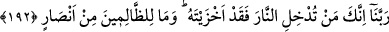

(el-Bakara, 2/74) Burada kalpler taşa benzetilmektedir. Mâlumdur ki taş ancak
kuvvetlice vurulduğu zaman kırılır. İşte bir arada bulunan bir topluluğun tek bir kalbe
kuvvetlice vurması, tek bir kişinin zikrinin kuvvetinden daha şiddetlidir. Zuhretü’l-
Âbidîn’de de böyle vârid olmuştur.
Kâşifî lâkabı ile mâruf, Vâiz Hüseyin şöyle der:
Hak amelinde âşıkların lâf ve sözleri
Sû-i edeb değildir, aşktır coşkulu hareketleri
Hak kadehinden bir yudum içenin
Ne edebi kalır, ne akıl ve düzeni.
Maksûd olan, sâlikin tevhid esnasında vecdin kendisine galip gelmesiyle iradesinden
sıyrıldığında, artık hiç bir pozisyon ve hareketine bakılmamasıdır. Çünkü o esnâda sâlik
kendi iradesiyle hareket etmemektedir, ki şu söz söylenebilsin:
Kısa görüşlü câhil kişinin işi
Kişiyi kendi önünde yâd etmektir.
Şüphesiz muvahhidin hareketleri ve zikri cehrî yapması, içinde bulunduğu makam ve
hâle göre gerçekten övgüye lâyıktır. Kendilerini zorlayıp yapmacık davrananlara
gelince, bunların bütün hareket ve fiilleri kendi iradelerinden kaynaklanmaktadır.
Şeyhler kitaplarında insanları bu tür yapmacık davranışlardan menetmişler, bu tür söz
ve fiilleri yasaklamışlardır.
Hülâsa-i kelâm akıllı kişilere düşen âdâba riâyet edip tavırlarına çeki düzen
vermeleri ve Melik-i Gaffâr’ı zikretmekten bir an bile uzak kalmamalarıdır.
192. Ey Rabbimiz! Doğrusu sen, kimi cehenneme koyarsan, artık onu rüsvay
etmişsindir. Zâlimlerin hiç yardımcıları yoktur.
“Ey Rabbimiz! Sen birini cehenneme soktun mu, onu” daha kötüsü düşünülemeyecek
şekilde “rüsvay etmişsin” demektir. Şu söz bu ifadeye benzemektedir: “En son koruya
varan, oraya varmış sayılır.”
Âyette geçen ifadeden maksat, bu azaptan kurtulmayı isteyenlerin ne şiddetli bir
korkuya kapılmış olduklarına dikkat çekerek korunmak isteyeni korkutmaktır. Burada,
ayrıca ruhânî azabın daha kötü olduğu da hissettirilmektedir.
“Zâlimlerin hiçbir yardımcıları yoktur.” “Zâlimler” lâfzı ile Allah Teâlâ ateşe
sokulanları kasdetmektedir. “Yardımcılar” ( __WORD__ ) kelimesinin cem’i (çoğul) olarak